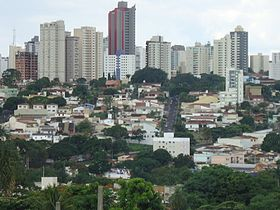

Uberlândia é um município brasileiro do interior do estado de Minas Gerais, Região Sudeste do país. Sua população, segundo estimativas do Instituto Brasileiro de Geografia e Estatística (IBGE), era de 706 597 habitantes em julho de 2021, sendo o município mais populoso da região do Triângulo Mineiro e o segundo de Minas Gerais, sendo o município mais populoso do interior de Minas e o quarto do interior do Brasil.[8]
Distante 537 quilômetros da capital estadual, Belo Horizonte, Uberlândia se emancipou de Uberaba no final da década de 1880, possuindo sua denominação atual somente em 1929. O município possui destaque no turismo, com seus diversos atrativos culturais, naturais e arquitetônicos. Alguns dos principais são o Mercado Municipal,[9] o Parque do Sabiá,[10] Parque Municipal Victorio Siquierolli, Praça Clarimundo Carneiro, Praça Tubal Vilela, Praça da Bicota/Rosário[11] e a famosa Avenida Rondon Pacheco.[12]
O primeiro nome que a atual cidade de Uberlândia teve foi São Pedro de Uberabinha, denominação recebida quando elevada a distrito de Uberaba em 21 de maio de 1852. Pela Lei Estadual nº 23, de 14 de março de 1891, passou a denominar-se Uberabinha, mesma data de sua instalação. Pela Lei Estadual nº 1.128, de 19 de outubro de 1929, a cidade passou a chamar-se Uberlândia, denominação que permanece até os tempos atuais.[13]
"Uberlândia" é um termo composto por dois termos de origens diferentes: "uber" e "lândia":
O primeiro homem de origem europeia a pisar na região do atual município de Uberlândia, território até então habitado por índios caiapós e bororós[carece de fontes], foi o bandeirante Bartolomeu Bueno da Silva, em 1632. A região, então pertencente à Capitania de São Vicente, passou a pertencer à Capitania de Minas Gerais e São Paulo por Carta Régia de 3 de novembro de 1709. João Pereira da Rocha (1818), após o desbravamento da região pelos bandeirantes, fixou-se pela região, demarcando área próxima à Aldeia de Santana (atual Indianópolis). Ali, ele instalou a sede da sesmaria, que denominou Fazenda São Francisco, dando origem ao município. Demarcou, ainda, a Fazenda Letreiro e a do Salto e deu o nome de Ribeirão São Pedro a um curso d'água encontrado. [16] A vinda de João Pereira atraiu muitas outras famílias, inclusive os Carrejos, que, em 1835, adquiriram parte da Fazenda São Francisco e de outras próximas, formando as sedes nas quais se instalaram aqueles irmãos: Olhos d'Água, Lage, Marimbondo e Tenda (a de Felisberto). Felisberto Alves Carrijo que, em 1964, foi legalmente reconhecido como fundador da cidade, era professor com formação adquirida em colégios de missionários. Instalou em sua casa a primeira escola do município e, aos domingos, rezava o terço. Formou um povoado, sendo este, em seguida, denominado como Nossa Senhora do Carmo em homenagem à capela de mesmo nome, inaugurada em 20 de outubro de 1853.[17][18]
A área do município é de 4.115,82 km², representando 0,7017 % do estado, 0,4452 % da Região Sudeste e 0,0484 % de todo o território brasileiro.[23] Desse total 135,3492 km² estão em perímetro urbano.[24]
Uberlândia está localizada junto à bacia do rio Paranaíba, tendo em seu território várias sub-bacias de pequenos e médios córregos com papéis importantes em sua configuração.[25] É drenado pela bacia hidrográfica do Rio Tejuco (o segundo maior afluente do rio Paranaíba), com sua bacia a sul e sudoeste do município, que possui como principais afluentes os Ribeirões Babilônia, Douradinho e Estiva, o Rio Cabaçal, estes localizados na zona rural, e o Rio Araguari. A bacia do Araguari abrange a porção leste do município. Seu principal afluente, na área do município, é o rio Uberabinha, que passa dentro do perímetro urbano. Há exploração do potencial hidrelétrico desse rio, a qual vêm ocorrendo através do funcionamento das usinas hidroelétricas de Nova Ponte, de Miranda e Amador Aguiar I e II.[26]
[8] Nogueira, Daniela (27 de agosto de 2021). «Uberlândia ultrapassa 700 mil habitantes e segue como 2ª mais populosa de MG; veja números das principais cidades do Triângulo, Alto Paranaíba e Noroeste de MG». G1 Triângulo e Alto Paranaíba. Consultado em 27 de agosto de 2021